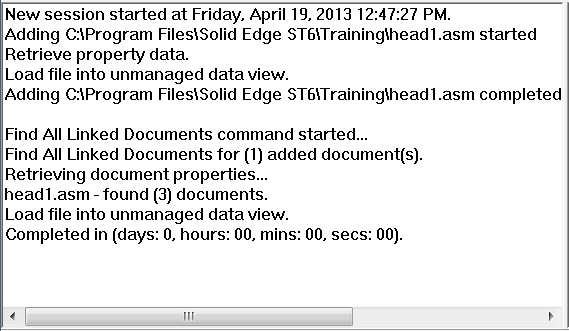

Progress Log
The Progress Log brings everything about your working session together in one place. You can scroll through the log as you work and review what the system has done, what is happening, and might be next.

This is an excellent auditing tool for use during the transaction of adding your documents into Teamcenter.